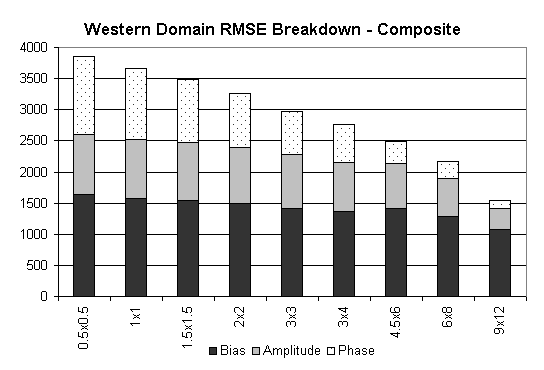
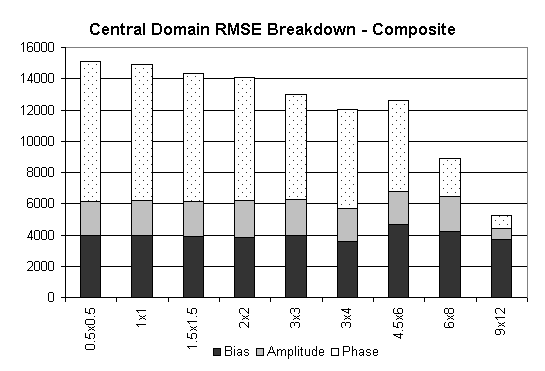
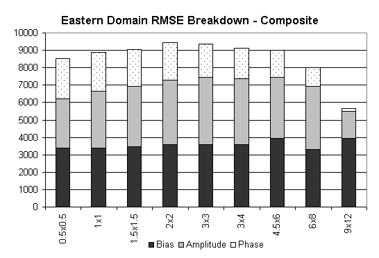

The least MSE is found in the western region. Each of the three MSE terms are smallest there. Position errors are greatest for the central region, where a distinct region of maximum precipitation was located, indicating the most difficult task is predicting the location of this maximum. Mean error is similar for eastern and central regions, suggesting the models have trouble extracting the correct amount of water from the atmosphere in these regions. The relatively large composite amplitude error in the eastern region indicates the models have difficulty reproducing spatially concentrated rainfall. It should be noted that central region MSE exceeds MSE for the U.S. domain.


